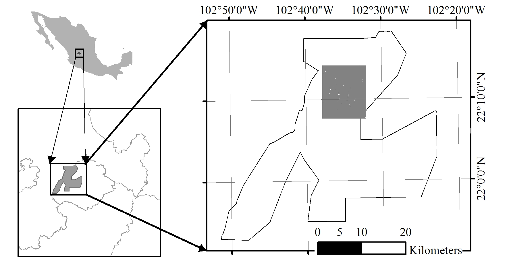
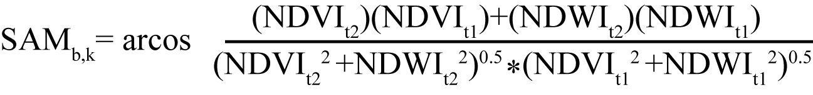
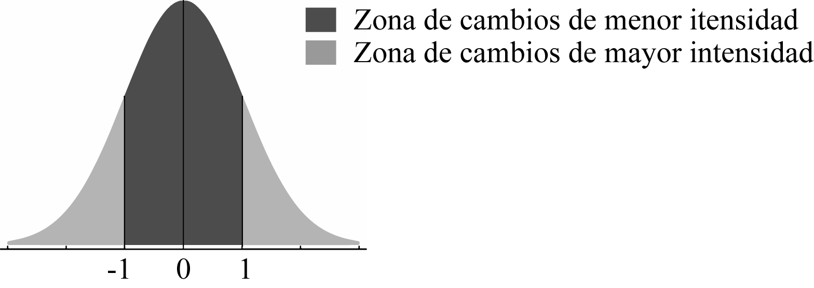
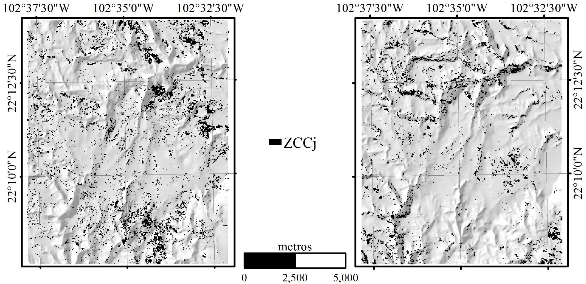
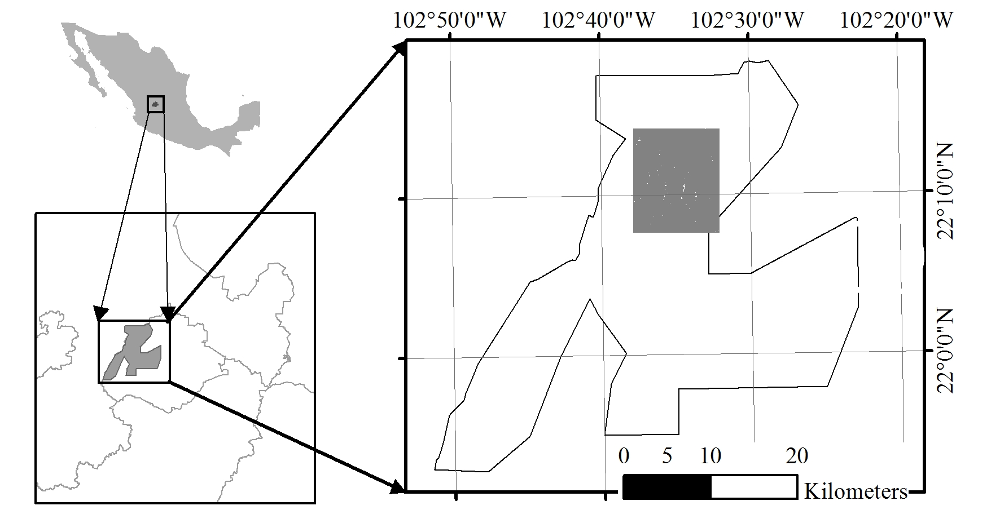
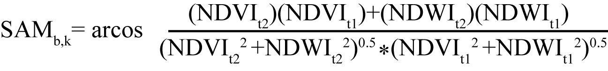
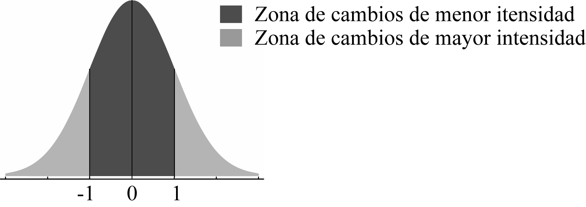
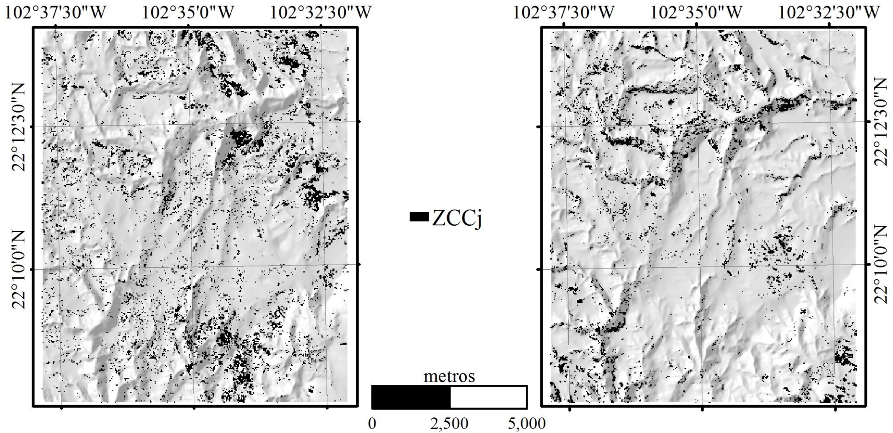

Dinámica multitemporal del Vigor Vegetal
en el Área Natural Protegida Sierra Fría,
Aguascalientes, México.
M.C. Héctor René Becerril Cejudo1; Dr. Víctor M. Rodríguez Moreno2;
Dr. Joaquín Sosa Ramírez3; Dr. Vicente Días Núñez4
Resumen
El Área Natural Protegida Sierra Fría (ANPSF) representa una zona de riqueza y
diversidad biológica que enfrenta amenazas de origen biótico y abiótico y que se
manifiestan principalmente en la fragmentación del ecosistema. Se utilizó el
estimado de reflectancia de una serie histórica de imágenes Thematic Mapper 5
para una superficie de estudio de 11,935.3 ha. El período de la serie comprendió
21 años y se dividió en dos periodos de contraste, 1990-2001 y 2001-2011. Se
definió como Vigor Vegetal (VV) a la relación de verdor y humedad observada en
un pixel a través de los índices NDVI y NDWI. Utilizando diferentes técnicas de
análisis incluyendo el Análisis del Vector de cambio, la Clasificación por Ángulo
Espectral, y la Diferencia Simple entre Imágenes, se detectaron cambios moderados
en la cubierta vegetal: en el primer período se observó una disminución en VV en
el 58.9% del área de estudio, donde solo 658 ha presentaron cambio en cobertura
en este sentido y principalmente en superficies con orientación Sur; el segundo
período resultó en un aumento en VV para el 85.1% del área de estudio con 730 ha
de cambio en cobertura en ese sentido y principalmente en superficies con
orientación Norte. Para el área de estudio, la prueba de χ2 indicó que la dinámica
de los cambios en cobertura no es independiente del período de estudio ni de la
orientación del terreno, con p < 0.000.
Palabras Clave: análisis multitemporal, Sierra Fría, vector de cambio, ángulo espectral, teledetección.
The Sierra Fría Natural Protected Area (SFNPA) represents a zone of richness and
biological diversity in process of recovery that faces different threats, mainly the
fragmentation of the ecosystem. The reflectance estimate of a historical series of
Thematic Mapper 5 images was used for a study area of 11,935.3 ha. The period of the
series comprised 21 years and was divided into two periods of contrast: 1990-2001
and 2001-2011. Vigor Vegetal (VV) was defined as the greenness and humidity observed
in a pixel through the NDVI and NDWI indexes. Applying different technics including
Vector Change Analysis, Spectral Angle Mapper and the Simple Difference between Images,
moderate changes in vegetation cover were detected: a decrease in VV was observed in
58.9% of the study area in the first period, where only 658 ha had a change in coverage
in this regard and mainly in areas facing South; second period resulted in an increase
in VV for 85.1% of the study area with 730 ha of change in coverage in this regard
mainly in areas facing North. For the study area, the test of χ2 indicated that the
dynamics of changes in coverage is not independent of the period of study nor of the
terrain aspect, with p < 0.000.
Keywords: multitemporal analysis, Sierra Fría, change vector analysis, spectral angle mapper, remote sensing.
1* Dirección General de Educación Tecnológica Agropecuaria y Ciencias del
Mar (DGETAyCM). Eliseo Trujillo No. 106 Barrio del Encino. 20240, Aguascalientes. Tel:
4499166289: E-mail: hector.becerril@dgetaycm.sems.gob.mx
2* Instituto Nacional de Investigaciones Forestales, Agrícolas y Pecuarias (INIFAP). Km 32.5 Carretera Aguascalientes-Zacatecas, Pabellón de Arteaga, Aguascalientes. E-mail: rodriguez.victor@inifap.gob.mx
3* Universidad Autónoma de Aguascalientes (UAA). Centro de Ciencias Agropecuarias. Jesús María, Aguascalientes. E-mail: jsosar@correo.uaa.mx
4* Universidad Autónoma de Aguascalientes (UAA). Centro de Ciencias Agropecuarias. Jesús María, Aguascalientes. E-mail: vicente-diaz@hotmail.com
El Área Natural Protegida Sierra Fría (ANPSF) representa una zona de riqueza y diversidad
biológica estratégica para el desarrollo interestatal de Aguascalientes y Zacatecas, y para
la estabilidad del clima, ya que brinda servicios ambientales de relevancia, como lo es la
conservación de la biodiversidad, la captura de carbono, la conservación de suelos, la
captación y filtración del agua, sin dejar de lado la belleza escénica que es aprovechada
para el esparcimiento de la población. El ANPSF alberga diferentes ecosistemas que fueron
perturbados a través de diferentes momentos históricos y actualmente cuenta con un plan de
manejo cuyo objetivo primario es la conservación de la biodiversidad y la estructura ecológica
(Gobierno del Estado de Aguascalientes, 2016). Las principales amenazas identificadas, para
los objetivos de conservación, son la fragmentación del ecosistema, la modificación de hábitat,
la competencia por introducción de especies exóticas, (Sosa, Solís, Jiménez, Íñiguez y Ortega,
2014), la afectación por organismos plaga, entre otras. En la década de 1990 a 2000 en México
sucedieron notables transformaciones en los ecosistemas de bosques, donde la vegetación secundaria
sustituyó a la vegetación original (Jiménez, et al., 2014; Arriola, Estrada, Ortega, Pérez y Gijón,
2014; Bezaury y Gutiérrez, 2009). La Sierra Fría no fue ajena a esta dinámica y de manera
constante se ha documentado el proceso de fragmentación de sus ecosistemas para el mismo período
(Chapa, Alba, y Sosa, 2008). Ante estas y otras amenazas, el gobierno estatal, a partir del 30 de
enero de 1994, declaró la protección para el ANPSF (Gobierno del Estado de Aguascalientes, 1994)
con carácter de Zona sujeta a Conservación, con una superficie de 112,090 ha. Años más tarde, el
17 de agosto de 2015, el Gobierno del estado decretó su recategorización administrativa como Área
Natural Protegida en la categoría de Área Silvestre Estatal, con una superficie de107,040 ha
(Lozano, 2010).
Las imágenes satelitales, fotografías aéreas e imágenes de vehículos no tripulados, se han
convertido en el conjunto de datos más importantes para caracterizar los procesos de intercambio
de gases entre la cubierta del suelo y la atmósfera, por su serie histórica, frecuencia de
registro y resolución espacial; de acuerdo con Azzouzi, Vidal y Bentounes (2015), representan un
extenso banco de datos espacio temporales que han facilitado el monitoreo de cambios en el uso
del suelo y la vegetación. Se han desarrollado diferentes técnicas para la detección de cambios
que van desde la fotointerpretación (Alemayehu, Rectalá, Fabbri y Sánchez, 2006; Nainggolan et
al., 2011) hasta procedimientos algebraicos más complejos que han permitido dar seguimiento a
fenómenos como la expansión urbana y agrícola, la incidencia de plagas, la deforestación y la
desertificación, entre otros. Una de las técnicas más utilizadas es el Análisis del Vector de
Cambio (VCA por sus siglas en inglés) (Azzouzzi et al., 2015; Zhuang, Kazhong, Fan y Yu, 2016),
que describe la magnitud y ángulo de dirección de cambio (Singht y Talwar, 2014) entre el valor
registrado en un pixel en dos fechas diferentes. Esta técnica fue diseñada originalmente para
aplicarse dentro de un espacio espectral bidimensional (Carvalho, Guimaraes, Gillespie, Silva y
Gomes, 2011) y de acuerdo con Zhuang et al., (2016), presenta mejores resultados cuando se combina
con la técnica de Clasificación por Ángulo Espectral (SAM por sus siglas en inglés). Combinando
las dos técnicas, entre dos fechas de imágenes se obtienen tres métricas de relevancia para el
estudio de la dinámica de los ecosistemas: 1) magnitud del cambio, 2) dirección del cambio, y 3)
similitud entre coberturas.
Descripción del área de estudio. El área de estudio se extiende desde los 102°31’56’’ a los 102°37’44’’ de longitud Oeste, y desde los 22°07’54’’ a los 22°14’10’’ de latitud Norte, con una superficie de 11,975.5 ha (Figura 1) y se ubica dentro de los límites del ANPSF y con un rango altitudinal que va de los 2,000 a los 2,800 msnm.
Fig 1. El recuadro gris (derecha) representa el área de estudio dentro del polígono
del ANPSF.
Las topoformas predominantes en la zona son Meseta Típica, Sierra Baja y Sierra Alta con Mesetas, Lomerío con Cañadas y Lomerío con Llanuras (Lozano, 2010). Es importante señalar que dentro del ANPSF se encuentra el 90% de los bosques templados del estado de Aguascalientes, y que las comunidades bióticas predominantes son asociaciones de encinos con otras especies como pino, manzanita, matorral espinoso, matorral rosetófilo y pastizales. La vegetación arbórea dominante del ANPSF la representan comunidades de los géneros Pinus y Quercus (Salado y Martínez, 2008; Sosa et al., 2014), aunque se presentan también comunidades de Arctostaphylos y Juniperus (Sosa et al., 2014). La vegetación en la zona de estudio, que corresponde mayormente a zonas de mesetas y de cañada, la conforman principalmente bosques de encino (Quercus eduardii, Q. sideroxila) asociados a pinos (Pinus spp.), mientras que en mesetas y laderas predominan táscate (Juniperus deppeana), madroño (Arbutus xalapensis y A. glandulosa) y manzanita (Arctostaphylos punges); se presentan además pastizales y otras especies de encino ampliamente distribuidas en el chaparral como es el caso de Q. potosina y Q. rugosa que a su vez se asocian con manzanita y táscate (Sosa, et al., 2015).
Las principales amenazas que han sido identificadas para la vegetación del ANPSF son las sequías prolongadas, el sobrepastoreo, los incendios forestales, la introducción de especies exóticas, la erosión, la atomización de la propiedad (Sosa et al., 2014) y la presencia de plagas forestales (Sosa et al., 2015; Díaz et al., 2014; Clark et al., 2011).
Materiales. Se utilizó el Modelo de Elevación del Terreno (MET) (INEGI, 2017) y seis imágenes del sensor Thematic Mapper de la plataforma Landsat 5 (TM-5) con tamaño de pixel de 30 m; las imágenes están libres de nubosidad y su fecha de adquisición es de febrero a abril de los años 1990, 2001 y 2011 (Cuadro 1); se utilizaron las bandas 3 (R: 0.63-0.69 μm), 4 (NIR: 0.76-09 μm) y 5 (SWIR: 1.55-1.75 μm). El software utilizado fue QGIS 2.14, ENVI 5.3, ArcGIS 9.3, R y R-Studio.
Para el presente estudio se monitoreó el Vigor Vegetal (VV) como la relación de humedad y verdor expresada a través de la respuesta espectral de un pixel en diferentes fechas; de este modo la pérdida de VV se define como la variación conjunta de humedad y verdor que expresa un decremento en sus valores a través de dos fechas; y la ganancia de VV es el comportamiento inverso, es decir, el incremento en los valores de humedad y verdor a través de dos fechas. Este concepto lo basamos en que el verdor del ecosistema está asociado con la cantidad de agua de que dispone.
En estudios multitemporales es necesario hacer una serie de correcciones sobre las imágenes debido a que, al tratarse de fechas distintas, pueden presentarse variaciones en el valor de los pixeles o distorsiones geométricas causadas por diferentes factores como pueden ser las condiciones atmosféricas, el ángulo de elevación solar al momento de registro de la imagen o la posición del sensor satelital con respecto a la superficie observada, entre otros. La primer corrección aplicada fue el ajuste geométrico de las imágenes y del MET, que consiste en la transformación de las coordenadas de los pixeles en una imagen, de tal manera que estos coincidan con exactitud con los pixeles de otra imagen de referencia, con esto se busca asegurar que se está comparando el mismo sitio a través del tiempo en cada imagen. Para este ajuste se utilizaron diferentes puntos de control imagen a imagen y como referencia la imagen TM-5 con fecha de adquisición 2011- 03-01; el valor del Error Medio Cuadrático (RMSE por sus siglas en inglés) sirvió como un indicador de la magnitud del ajuste realizado en cada imagen (Cuadro 2).
Posteriormente se aplicó una corrección topográfica sobre las imágenes TM-5 siguiendo el método del Factor C (Ediriweera et al., 2013; Chuvieco, 2010), y se aplicó también una corrección atmosférica con el módulo FLAASH del software ENVI (Aguilar, Mora y Vargas, 2015; HGS, 2017). Posteriormente se promediaron los valores de reflectancia de las dos imágenes de cada año para obtener una sola imagen anual (Figura 2) . Se eliminaron los pixeles que visualmente se identificaron (para al menos uno de los años) como errores del sensor o como cuerpos de agua, reduciendo la superficie de estudio a 11,935.3 ha.

Fig 2. Imágenes TM-5 antes de las correcciones (arriba), y después de las
correcciones (abajo) donde se observa un mayor contraste entre las coberturas presentes
así como la reducción del efecto de sombra del terreno.
En cuanto al verdor de la planta, este es una respuesta espectral al contenido de pigmentos en la hoja; el Índice de Vegetación de Diferencia Normalizada (NDVI por sus siglas en inglés) es un indicador numérico ampliamente utilizado (Rodríguez y Bullock, 2013) que describe el verdor de la vegetación y tiende a presentar valores altos en la presencia de mayor densidad de clorofila (Meera, Parthiban y Nagaraj, 2015). Por otro lado, el contenido de agua en la planta se manifiesta con una fuerte absorción espectral en la región que va de los 1.5 a los 2.5 ⎧m; por otro lado, el Índice de Agua de Diferencia Normalizada (NDWI por sus siglas en inglés) es un indicador del contenido de agua en la vegetación y tiende a presentar valores altos ante la mayor presencia de agua y principalmente cuando el Índice de Área Foliar es mayor a 4 (Gao, 1996). Con base en lo anterior, es posible describir la dinámica temporal del VV a partir de monitorear los emplazamientos en el valor de los índices NDWI y NDVI para una misma posición geográfica a través de diferentes fechas.
Hay tres métricas que son de interés respecto al emplazamiento en los valores del NDVI y NDWI observados en un pixel en dos fechas: 1) la magnitud del emplazamiento; 2) la dirección de cambio o ángulo formado entre la dirección de emplazamiento y la horizontal, y 3) la similitud observada a través del ángulo formado entre las firmas espectrales de las dos fechas. Aquellos pixeles que expresan valores altos en la magnitud de cambio y ángulos mayores entre firmas, son clasificados como zonas relacionadas con la sustitución del tipo de cobertura en el territorio.
Con los datos de reflectancia de cada año se generaron las imágenes de los índices NDWI (Gao, 1996) y NDVI (Meera et al., 2015; Bhandari, Kumar y Singh, 2012; Espinosa et al., 2017; Rodríguez y Bullock, 2013) como se muestra a continuación:
Posteriormente se creó una imagen de dos bandas (b y k) para cada año, donde la banda b corresponde al NDVI y la banda k al NDWI; sobre las imágenes resultantes se llevaron a cabo los análisis para la detección de cambios. El primer análisis fue el VCA del que se obtuvieron las medidas Magnitud de Cambio (MC) y Dirección de Cambio (DC). La medida de MC se calculó como lo indica la siguiente ecuación (Louakfaoui, Casanova, y Romo, 2001; Chuvieco, 2010):
donde MCb,k indica la Magnitud de Cambio observada en un pixel con respecto a los valores de las bandas b y k contrastados en dos fechas (t1 y t2).
En cuanto al valor de DC, este se calculó como el ángulo formado entre el eje horizontal y la dirección de emplazamiento observada en los valores de las bandas b y k de un pixel contrastados en dos fechas (Chuvieco, 2010):
donde DCb,k indica el ángulo de Dirección de Cambio en el emplazamiento de los valores de las bandas b y k observado en un pixel a través de dos fechas (t1 y t2).
Los valores de DC observados en cada pixel se clasificaron en períodos de π/2, dividiendo así el espacio espectral de los índices en cuadrantes (Qi). La Dirección de Cambio resultante en Q1 representa ganancia de VV; y Q3 representa pérdida de VV; por su parte Q2 representa cambios donde hay ganancia de humedad con pérdida de verdor, mientras que Q4 representa cambios donde hay ganancia de verdor con pérdida de humedad (Figura 3) .

Fig 3. Espacio espectral de los índices dividido en cuadrantes (Qi ) en función de DC.
Se consideró incluir además una medida de similitud que permitiera mejorar la detección de cambios, principalmente aquellos cambios relacionados con la sustitución de la cobertura vegetal. Para esto se utilizó la técnica de Clasificación por Ángulo Espectral (SAM por sus siglas en inglés), la cual se basa en el hecho de que un tipo de cobertura específico, registrado en un pixel, tiene una respuesta espectral característica que se representa a través de una firma espectral (Sohn y Rebello, 2002), dicha firma espectral puede compararse con otra en una fecha distinta y para el mismo punto geográfico; el nivel de similitud entre ambas firmas se estima midiendo el ángulo formado entre las mismas dentro del espacio espectral (Chuvieco, 2010):

donde SAMb,k representa el Ángulo Espectral formado entre dos firmas espectrales en dos fechas observadas (t1 y t2) para una misma posición geográfica. La necesidad de incluir la medida de SAM radica en que, es posible encontrar un cambio en la respuesta espectral de un punto geográfico que genere medidas similares de magnitud y dirección, pero podría no haber similitud entre los tipos de cobertura presentes en cada fecha, donde a mayor similitud corresponden valores mínimos de SAM (Figura 4) .

Fig 4. Las gráficas representan dos mediciones en los que las firmas espectrales de dos fechas
(t1 y t2) muestran valores similares para MC (λ) y para el mismo cuadrante de DC (Q). En la imagen izquierda
se observa pérdida
de VV y un posible cambio de cobertura entre t1 y t2 debido al valor grande de SAM (θ), mientras que
la mayor similitud en las firmas espectrales de la imagen derecha (valor pequeño de θ) indica que se
trata del mismo tipo de cobertura en ambas fechas.
El siguiente paso fue realizar una Diferencia Simple entre Imágenes (Myint et al., 2008); primero entre los datos de MC de ambos períodos, y posteriormente entre los datos de SAM de ambos períodos, como se muestra a continuación:
donde DMC indica la Diferencia de Magnitud de Cambio entre dos períodos para un pixel i; DAE indica la Diferencia de Ángulo Espectral entre dos períodos para un pixel i; j1 y j2 son los períodos de estudio.
A partir de la estandarización de DMC y DAE se obtuvieron las variables ZMC y ZAE, en las que los pixeles con valores extremos, es decir con valores más allá de una desviación típica con respecto a la media de su respectiva distribución, representan cambios de mayor intensidad; por otro lado, los pixeles con valores localizados en el centro de las distribuciones se interpretan como cambios de baja intensidad (Figura 5) .
Fig 5. Distribución de diferencias estandarizadas: los pixeles pertenecientes a la zona de cambios de
mayor intensidad se localiza arriba de una desviación típica con respecto a la media.
Los pixeles con valores extremos en las distribuciones de ZMC se clasificaron como cambios de Mayor Magnitud (MMG), mientras que los pixeles con valores extremos en la distribución de ZAE se clasificaron como cambios de Mayor Ángulo Espectral (MAE). Estas clasificaciones se hicieron como lo indican las ecuaciones siguientes:
donde MMGj son aquellos pixeles con cambios de Mayor Magnitud en el período j; MAEj son aquellos pixeles con cambios de Mayor Ángulo Espectral en el período j; λμ y λs son la media y la desviación típica de la distribución de ZMC; θμ y θs son la media y la desviación típica de la distribución de ZAE.
Posteriormente se hizo la clasificación de lo que se denominó Zona de Cambio en Cobertura en cada período (ZCCj), y estas se obtuvieron a partir de la intersección espacial de aquellos pixeles clasificados como MAEj y MMGj. Estas zonas están relacionadas con el cambio de tipo de cobertura presente a través de un período.
El cálculo de superficies se hizo a partir del conteo de pixeles, los cuales se utilizaron para realizar diferentes pruebas de independencia χ2 (Agresti, 2002) con miras a identificar posibles asociaciones en los cambios observados.
Se consultaron datos climatológicos de la estación La Tinaja (CONAGUA, 2017) con la finalidad de conocer las condiciones de precipitación y evaporación en las fechas observadas y si estas fueron similares o si pudieran representar algún factor de variación en los datos registrados por el sensor. En el Cuadro 3 se muestran las variables Evaporación (EVP) y Precipitación (PP) del período anual que va de mayo a diciembre para los años 1989, 2000 y 2010; y también del período invernal que va del 21 de diciembre previo y hasta la fecha de adquisición de la última imagen de cada año.
ANL: período anual
INV: período invernal
Con el mismo propósito se contabilizaron los días transcurridos entre el último evento de lluvia y la fecha de adquisición de cada imagen, definiendo como último evento de lluvia al último período de días continuos con registro de precipitación (Cuadro 4).
A continuación se muestran primero los resultados detallados del comportamiento observado dentro de
ZCCj con respecto a la Dirección de Cambio y a la orientación del terreno y, posteriormente se muestran
los resultados detallados del comportamiento de DCj observado en la superficie total del área de estudio
y con respecto a la orientación del terreno.
Zona de Cambio Neto. La mayor parte de la superficie se comportó estable en cuanto al tipo de cobertura presente, sin embargo, se observaron Zonas de Cambio en Cobertura (ZCCj) donde los pixeles mostraron un comportamiento espectral relacionado con la posible sustitución de la cobertura en los períodos de estudio. En el Período 1 (de 1990 a 2001) se clasificaron 11,507 pixeles como ZCC1, lo que representa el 8.7% del área de estudio(1,035.6 ha); para el Período 2 (de 2001 a 2011) se clasificaron 8,478 pixeles como ZCC2, lo que representa el 6.4% del área de estudio (763 ha) (Figura 6) .
Fig 6. El color negro señala la Zona de Cambio en el período j (ZCCj): la imagen de la izquierda
corresponde a ZCC1 (1990-2001) y la imagen derecha a ZCC2 (2001-2011).
Observamos que dentro de la superficie de ZCCj, el comportamiento de la Dirección de Cambio no es independientes del período de estudio, χ2 = 15,894, GL = 3, p < 0.000, lo que se aprecia en los datos del Cuadro 5 .
Los cambios observados en los pixeles de ZCCj con respecto a la orientación del terreno, tampoco son independientes del período de estudio, χ2 = 943, GL=3, p < 0.000, (Cuadro 6).
Los cambios observados en los pixeles de ZCj con respecto a la orientación del terreno, tampoco son independientes del período de estudio, χ2 = 943, GL=3, p < 0.000, (Figura 8) .

Fig 8. En el período 1990-2001 (izquierda) se observa una mayor superficie
de Q3 y una superficie importante de Q2; para el período 2001-2011 (derecha) fue
ampliamente mayor la superficie de Q1.
Ahora, se observó también que el 93.2% de los pixeles clasificados como Q3 en ZC1, para el segundo período fueron clasificados como Q1 pero quedando fuera de ZC2. Esto quiere decir que al final del Período 1 se presentaron cambios de cobertura relacionados con pérdida de VV y posteriormente, al final del Período 2, la mayor parte de esa superficie expresó una recuperación de VV pero sin cambio en el tipo de cobertura, es decir, sin regresar a la condición de vegetación que se tenía al inicio del Período 1.
Se encontró también que la distribución espacial de la Dirección de Cambio (DC) dentro de ZC1 no es independiente de la orientación del terreno: χ2 = 383, GL=9, p < 0.000, (Cuadro 7).
En el caso de la distribución espacial de DC dentro de ZC2 se encontró que tampoco es independiente de la orientación del terreno: χ2 = 80, GL=9, p < 0.000, (Cuadro 8).
Dirección de Cambio (DC). En cuanto al comportamiento general de la Dirección de Cambio dentro de la superficie total de la zona de estudio en cada período (DCj), este fue muy similar a lo observado anteriormente dentro de las Zonas de Cambio, en la Figura 8 se puede observar la clara dominancia de Q3 en el Período 1 y de Q1 en el Período 2, lo anterior se corrobora con los datos del Cuadro 9.
En la superficie total del área de estudio se observó que la distribución espacial de DC1 no es independiente de la orientación del terreno: χ2 = 1,454, GL = 9, p < 0.000, (Cuadro 10).
En el caso de la distribución espacial de DC2, se observó que tampoco es independiente de la orientación del terreno: χ2 = 641, GL=9, p < 0.000, (Cuadro 11).
La mayor parte del área de estudio presentó cambios moderados a través de las tres fechas observadas,
lo que se determinó por la reducida superficie obtenida de ZCj que representa cambios de mayor
intensidad; lo anterior coincide con los datos obtenidos por Díaz et al., (2016) y Chapa (2008)
quienes reportan cambios menores en el paisaje del ANPSF en el período 1956-2003, y coincide también con
los datos de Creel y Gutiérrez (2009) donde reportan una baja tasa de cambio de la vegetación primaria
entre 1990 y 2000. Sin embargo, en el período 1990-2001 pudimos clasificar 11,507 pixeles (1,035 ha) como
ZC1, de las cuales 650 ha fueron cambios relacionados con pérdida de vigor vegetal (5.5% del área de estudio),
resultados que coinciden proporcionalmente con los datos publicados por Gobierno del Estado de Aguascalientes
(2014) donde se reporta la pérdida de bosques primarios en una superficie equivalente al 5.9% de la Sierra
Fría en el período 1990-2000. Con respecto a la superficie que fue clasificada como Q3 dentro de ZC1, creemos
que podría tratarse de zonas donde la vegetación primaria original fue sustituida con vegetación secundaria
(Siqueiros et al., 2016) ya sea de manera total o parcial. Posteriormente, en el período 2001-2011 se
clasificaron 762 ha como ZC2, de las cuales 730 presentaron ganancia de Vigor Vegetal (6% del área de estudio),
lo que podría tratarse de zonas que se encuentran en alguna etapa de sucesión regenerativa, probablemente
siguiendo la ruta sucesional en la que Juniperus deppeana y Arctostaphylos pungens son sustituidos por Q.
potosina y Q. rugosa (Díaz, 2012).
El comportamiento general del Vigor Vegetal en la superficie total de la zona de estudio fue diferente en cada período en lo que respecta a la Dirección de Cambio. El período 1990-2001 se caracteriza por presentar pérdida de Vigor Vegetal en el 58% del área de estudio, y además por registrar 690 mm de evaporación en el ciclo invernal correspondiente a la imagen de 2001, cifra muy superior a los valores observados para las otras fechas analizadas. En ese mismo período también se detectó una superficie de 3,796 ha de Q2 (32% del área de estudio), lo que puede deberse al incremento en el contenido de agua de la vegetación a causa del evento de lluvia de 24 mm registrado 4 días antes de la adquisición de la imagen con fecha 22/04/01; de lo anterior, creemos que el incremento de humedad se reflejó en el NDWI antes que en el NDVI (Gu, 2007) por la alta sensibilidad del SWIR a la presencia de agua (Palacios, et al., 2005; Gao, 1996). El año 2011 se caracteriza por haber registrado los valores más bajos de evaporación para el ciclo invernal (273 mm), lo que probablemente influyó en el comportamiento general de ganancia de Vigor Vegetal que se presentó en el 85% del área de estudio.
Es posible que el clima sea el principal factor que influyó sobre el comportamiento del Vigor Vegetal en cada período, y la topografía aumentó su potencial de afectación ya que las superficies convexas y con orientación Sur fueron más susceptibles a presentar Zonas de Cambio relacionadas con pérdida de Vigor Vegetal, particularmente en condiciones de sequía, mientras que las Zonas de Cambio relacionadas con la ganancia de vigor se observaron en su mayoría en superficies cóncavas y con orientación Norte. Aunado a esto, la fragmentación del bosque puede modificar las condiciones de luminosidad, viento, temperatura y humedad al interior de la masa forestal, y de acuerdo a las condiciones de pendiente, orientación del terreno y su curvatura, pueden originarse diferentes combinaciones microclimáticas que afectan directamente sobre la regeneración, el desarrollo y la sobrevivencia de las especies vegetales presentes (von Arx, Graf, Thimonier y Rebetez, 2013; Gómez, 2004; Promis, Caldetey e Ibarra, 2010; Chen et al., 1999).
No descartamos la presencia de perturbaciones secundarias que hayan influido en la superficie detectada de Zonas de Cambio en el período 1990-2001. Las condiciones de sequía pudieron provocar el debilitamiento de las poblaciones forestales, facilitando el ataque de plagas y enfermedades; existen registros de infestaciones importantes de descortezadores en la Sierra Fría en enero de 2001, donde además fueron removidos 12,000 árboles como medida inicial de saneamiento (Asociación Sierra Fría, 2002). Además, en la zona de estudio se observan poblaciones importantes y ampliamente distribuidas de Juniperus deppeana y Q. potosina, en las que se reportan las principales tendencias de fragmentación (Chapa, 2008), además, tanto Juniperus deppeana como Q. potosina son particularmente vulnerables al ataque de muérdagos, y existen antecedentes de infestaciones importantes en la parte central de la Sierra Fría (Clark, 2011). Por otro lado, la Sierra Fría es considerada zona de alto riesgo en materia de incendios forestales (Salado y Martínez, 2008) y para el año 2000 se reportaron un total de 8 incendios en el estado de Aguascalientes que cubrieron un total de 851 ha (CONAFOR, 2017), por lo que es muy posible que algunos de esos eventos se hayan presentado dentro del área de estudio.
Los resultados obtenidos no fueron validados en campo y tampoco se contó con información previa referente a estudios sobre la dinámica del Vigor Vegetal que permitieran realizar algún tipo de comparación. Los resultados que obtuvimos pueden ser de utilidad para estudios posteriores en el monitoreo de la dinámica temporal de grupos vegetales específicos y para determinar otras medidas como la fragmentación del paisaje; del mismo modo, para estudios posteriores se recomienda integrar los registros georreferenciados de incendios y de la incidencia de plagas forestales, ya que estos podrían explicar la naturaleza de algunos cambios observados.
Se detectaron cambios moderados en la mayor parte de la superficie a través de los dos períodos
de estudio, y una tendencia de recuperación del Vigor Vegetal al final del período 2001-2011.
En el período 1990-2001
se detectó una pérdida de Vigor Vegetal en el 58% del área de estudio aunque solo 650 ha presentaron
posible cambio de tipo
de cobertura en esa tendencia; en el período 2001-2011 se detectó una ganancia de Vigor Vegetal
en el 85% del área de estudio pero solo 730 ha presentaron cambio de tipo de cobertura
en ese sentido.
Existen elementos para suponer que las coberturas vegetales que se localizan en terrenos con orientación Sur son más propensas a presentar pérdida de Vigor Vegetal en condiciones de sequía. De lo anterior creemos que es conveniente diseñar programas de monitoreo forestal que consideren la influencia del factor topográfico sobre la vegetación en escenarios de sequía.
Agresti, A. 2002. Categorical data analysis. John Wiley & Sons. Florida. 710 p.
Aguilar, H., Mora, R., y Vargas, C. 2014. Metodología para la corrección atmosférica de imágenes ASTER, Rapideye, SPOT 2 y Landsat ( con el módulo FLAASH del software ENVI). Revista Geográfica de América Central, 2(53): 39-59. DOI: 10.15359/rgac.253.2
Alemayehu, T., Rectalá, R., Fabbri, A., y Sánchez, J. 2006. Land use change detection as a basis for analysing desertification processes: a case study in Tabernas (Almeria, Spain). Springer. Desertification in the Mediterranean Region. A security issue. 341-352.
Asociación Sierra Fría (A. S. F.). 2002. Situación contra la lucha del descortezador del pino (Dendroctonus spp.) en la Sierra Fría, Aguascalientes (Informe sometido a la embajada estado- unidense en México). 18 p.
Alwis, D., Easton, Z., Dhalke, H., Philpot, W., y Steenhuis, T. 2007. Unsupervised classification of saturated areas using a time series of remotely sensed images. Hydrology and earth system sciences. 11: 1609-1620. Recuperado de: https://www.researchgate.net/publication/26640225_Unsupervised_Classification_of_Saturated_Areas _Using_a_Time_Series_of_Remotely_Sensed_Images
Arriola, V., Estrada, E., Ortega, A., Pérez, R., y Gijón, A. 2014. Deterioro en áreas naturales protegidas del centro de México y del Eje Neovolcánico Transversal. Investigación y Ciencia de la Universidad Autónoma de Aguascalientes 60:37-49.
Azzouzi, S., Vidal,A., y Bentounes, H.B. 2015. A modified approach for change detection using Change Vector Analysis in posterior probability space. The international archives of the Photogrammetry, Remote sensing and spatial information sciences 40(7).
Bezaury, J., y Gutiérrez, D. 2009. Áreas naturales protegidas y desarrollo social en México, en Capital natural de México, vol. II: Estado de conservación y tendencias de cambio. Conabio, México, pp. 385-431.
Bhandari, A., Kumar, A., y Singh, G. 2012. Feature extraction using Normilized Difference vegetation Index (NDVI): a case study of Jabalpur City. Procedia technology, 6: 612-621. DOI:10.1016/j.protcy.2012.10.074
Carvalho, O., Guimaraes, R., Gillespie, A., Silva, N., y Gomes, R. 2011. A new approach to Change Vector Analysis using distance and similarity measures. Remote sensing. 3: 2473- 2493. DOI:10.3390/rs3112473
Chapa, D., Sosa, J., y De Alba, A. 2008. Estudio multitemporal de fragmentación de los bosques en la Sierra Fría, Aguascalientes, México. Madera y bosques, 14(1): 37-51.
Chen, J., Saunders, S., Crow, T., Naiman, R., Brosofske, K., Mroz, G., Brookshire, B., y Franklin, J. 1999. Microclimate in forest ecosystem and landscape ecology: variations in local climate can be used to monitor and compare te effects of different managemente regimes. BioScience 49(4): 288-297.
Chuvieco, E. 2010. Teledetección ambiental: la observación de la tierra desde el espacio. Ariel. Barcelona. 590 p.
Clark, R., Torres, B., Alfonso, C., Valdez, J., González, G., Bretado, J., y Campos, J. 2011. Análisis de la abundancia e infección por muérdago en Sierra Fría, Aguascalientes, México. Madera y Bosques 17(2):19-33. DOI: 10.21829/myb.2011.1721146
Comisión Nacional del Agua [CONAGUA]. 2017. Observando el tiempo. México.: CONAGUA. Recuperado de: http://200.4.8.20/tools/RESOURCES/Diarios/1010.txt
Comisión Nacional Forestal [CONAFOR]. 2017. Temas forestales: incendios. México:. CONAFOR. Recuperado de: http://www.conafor.gob.mx/web/temas-forestales/incendios/
Díaz, V. 2012. Ecología y manejo de paisajes forestales en la Sierra Fría, Aguascalientes, México (Tésis de doctorado). Universidad Autónoma de Aguascalientes. Aguascalientes, México.
Díaz, V., Sosa, J., y Macías, I. 2014. Diagnóstico fitosanitario de la vegetación en ecosistemas prioritarios de Aguascalientes. Comisión Nacional Forestal-Secretaría del Medio Ambiente del Estado de Aguascalientes. 84 p.
Díaz, V., Sosa, J., y Pérez, D. 2016. Vegetation patch dynamics and tree diversity in a conifer and oak forest in central Mexico. Botanical Sciences. 94 (2): 229-240.
Ediriweera, S., Pathirana, S., Danaher, T., Nichols, D., y Moffiet, T. 2013. Evaluation of different topographic corrections for Landsat TM data by prediction of Foliage Projective Cover (FPC) in topographically complex landscapes. Remoste sens. 5(12), 6767-6789. DOI: 10.3390/rs5126767
Espinosa, J., Palacios, E., Tijerina, L., Flores, M., y Quevedo, H. 2017. Sistema de monitoreo satelital para el seguimiento y desarrollo de cultivos del Distrito de Riego 038. Tecnología y Ciencias del Agua 8(1):. 95-104.
Gao, B., 1996. NDWI—a normalized difference water index for remote sensing of vegetation liquid water from space. Remote Sensing of Environment 58: 257–266. Recuperado desde: http://ceeserver.cee.cornell.edu/wdp2/cee6150/Readings/Gao_1996_RSE_58_257- 266_NDWI.pdf
Gobierno del Estado de Aguascalientes. Periódico Oficial, Tomo LVII, Núm. 5, 27pp., 1994.
Gobierno del Estado de Aguascalientes. 2014. Programa Estatal de Ordenamiento Ecológico y Terriotorial Aguascalientes 2013-2035 2014. Consultado desde: http://www.ordenjuridico.gob.mx/Documentos/Estatal/Aguascalientes/wo99062.pdf
Gobierno del Estado de Aguascalientes. 2016. Programa de Manejo del Área Natural Protegida Área Silvestre Estatal Sierra Fría. Consultado desde: file:///C:/Users/Subdireccion%20Admin/Downloads/19- 09052016(Tercera%20Secc.)%20(2).pdf
Gómez, V. 2004. Cubiertas forestales y respuesta microclimática. Investigaciones agrarias. Fuera de serie: 84-100. Consultado desde: http://revistas.inia.es/index.php/fs/article/view/857/854
Gu, Y., Brown, J., Verdin, J., y Wardlow, B. 2007. A five year analysis of MODIS NDVI and NDWI for grassland drough assessment over the central Great Plains of the United States. Agu publications 34(6). Consultado desde: http://onlinelibrary.wiley.com/doi/10.1029/2006GL029127/full#grl22844-bib-0007
Harris Geospatial Solutions [HGS]. 2017. Atmospheric Corrections: Fast Line of Sight Atmospheric Analysis of Hypercubes (FLAASH). Docs Center. Recuperado de: http://www.harrisgeospatial.com/docs/FLAASH.html
Instituto Nacional de Estadística y Geografía (INEGI). 2017. Geografía: datos de relieve. Consultado desde: http://www3.inegi.org.mx/sistemas/productos/default.aspx?cl=209010200
Jiménez, C., Sosa, J., Cortéz, P., Solís, A., Íñiguez, L., y Ortega, A. 2014. México país megadiverso y la relación con las áreas naturales protegidas. Investigación y Ciencia de la Universidad Autónoma de Aguascalientes 60:16-22.
Louakfaoui, E., Casanova, J., y Romo, A. 2001. El TVI (Thermal Vegetation Index) y el vector de cambio para el seguimiento y control de la deforestación. Teledetección, medio ambiente y cambio global.
Lozano, L.F. 2010. Programa para la conservación y manejo de un área silvestre estatal: Sierra Fría, Aguascalientes (México). Universidad Internacional de Andalucía.
Meera, G., Parthiban, S., y Nagaraj, C. 2015. NDVI: vegetation change detection using remote sensing and GIS- a case of study of Vellore District. Procedia Computer Science 57: 1199-1210.
Myint, S., Yuan, M., Cerveny, R., y Giri, C. 2008. Comparison of remote sensing image processing technics to identify tornado damage areas from Landsat TM data. Sensors. 8(2): 1128-1156. DOI: 10.3390/s8021128
Nainggolan, D., de Vente, J., Boix, C., Termansen, M., Hubaccek, K., y Reed, R. 2012. Afforestation, agricultural abandonment and intensification: Competing trajectories in semiarid Mediterranean agro-ecosystems. Agriculture, ecosystems and environment 159: 90-104.
Palacios, A., Khanna, S., Litago, J., Whiting, M., y Ustin, S. 2005. Assessment of NDVI and NDWI spectral indices using MODIS time series analysis development of a new spectral index based on MODIS shortwave infrared bands. Consultado desde: https://www.researchgate.net/publication/258110048_Assessment_of_NDVI_and_NDWI _spectral_indices_using_MODIS_time_series_analysis_and_development_of_a_new_spe ctral_index_based_on_MODIS_shortwave_infrared_bands
Promis, a., Caldentey, J., e Ibarra, M. 2010. Microclima en el interior de un bosque de Nothofagus pumilio y el efecto de una corta de regeneración. Bosque 31(2): 129-139.
Rodríguez, V., y Bullock, S. 2013. Comparación espacial y temporal de índices de la vegetación para verdor y humedad y aplicación para estimar LAI en el desierto Sonorense. Revista mexicana de ciencias agrícolas 4(4): 611-623.
Salado, A., y Martínez V. 2008. Amenazas a la biodiversidad: incendios forestales. La biodiversidad en Aguascalientes: estudio de estado. Comisión Nacional para el Conocimiento y Uso de la Biodiversidad (CONABIO) (Ed). pp: 273-277. Aguascalientes, México: CONABIO. Recuperado de: http://www.biodiversidad.gob.mx/region/EEB/pdf/ESTUDIO%20DE%20BIODIVERSID AD%20EN%20AGUASCALIENTES.pdf
Singht, S., y Talwar, R. 2014. A comparative study on Change Vector Analysis based change detection techniques. Sadhana 39(6): 1311-1331.
Siqueiros, M.E.; Rodríguez, J.A.; Martínez, J., y Sierra, J.C. 2016. Situación actual de la vegetación en el estado de Aguascalientes, México. Botanical Sciences. 94 (3): 455-470. DOI: 10.17129/botsci.466
Sosa, J., Solís, A., Jiménez, C., Íñiguez, L., y Ortega, A. 2014. Manejo del Área natural protegida Sierra Fría, Aguascalientes: situación actual y desafíos. Investigación y Ciencia de la Universidad Autónoma de Aguascalientes 60: 71-77.
Sosa, J., Breceda, A., Jiménez, C., Íñiguez, L., Ortega, A. 2015. Los ecosistemas de la Sierra Fría en Aguascalientes y su conservación. En A. Ortega. (Ed)., Las Áreas Naturales Protegidas y la investigación científica en México. pp. 447-472. La Paz. México. Red Áreas Naturales Protegidas.
U.S. Geological Survey. 2017. Earth Explorer. Base de datos. Consultado desde: https://earthexplorer.usgs.gov.
Von Arx, G., Graf, E., Thimonier, A., y Rebetez, M. 2013. Microclimate in forest varying leaf area index and soil moisture: potential implications for seedling establishment in a changing climate. Journal of ecology 101 (5):1201-1213. DOI: 10.1111/1365-2745.12121
Palabras Clave: análisis multitemporal, Sierra Fría, vector de cambio, ángulo espectral, teledetección.
Abstract
The Sierra Fría Natural Protected Area (SFNPA) represents a zone of richness and
biological diversity in process of recovery that faces different threats, mainly the
fragmentation of the ecosystem. The reflectance estimate of a historical series of
Thematic Mapper 5 images was used for a study area of 11,935.3 ha. The period of the
series comprised 21 years and was divided into two periods of contrast: 1990-2001
and 2001-2011. Vigor Vegetal (VV) was defined as the greenness and humidity observed
in a pixel through the NDVI and NDWI indexes. Applying different technics including
Vector Change Analysis, Spectral Angle Mapper and the Simple Difference between Images,
moderate changes in vegetation cover were detected: a decrease in VV was observed in
58.9% of the study area in the first period, where only 658 ha had a change in coverage
in this regard and mainly in areas facing South; second period resulted in an increase
in VV for 85.1% of the study area with 730 ha of change in coverage in this regard
mainly in areas facing North. For the study area, the test of χ2 indicated that the
dynamics of changes in coverage is not independent of the period of study nor of the
terrain aspect, with p < 0.000.
Keywords: multitemporal analysis, Sierra Fría, change vector analysis, spectral angle mapper, remote sensing.
2* Instituto Nacional de Investigaciones Forestales, Agrícolas y Pecuarias (INIFAP). Km 32.5 Carretera Aguascalientes-Zacatecas, Pabellón de Arteaga, Aguascalientes. E-mail: rodriguez.victor@inifap.gob.mx
3* Universidad Autónoma de Aguascalientes (UAA). Centro de Ciencias Agropecuarias. Jesús María, Aguascalientes. E-mail: jsosar@correo.uaa.mx
4* Universidad Autónoma de Aguascalientes (UAA). Centro de Ciencias Agropecuarias. Jesús María, Aguascalientes. E-mail: vicente-diaz@hotmail.com
Introducción
El Área Natural Protegida Sierra Fría (ANPSF) representa una zona de riqueza y diversidad
biológica estratégica para el desarrollo interestatal de Aguascalientes y Zacatecas, y para
la estabilidad del clima, ya que brinda servicios ambientales de relevancia, como lo es la
conservación de la biodiversidad, la captura de carbono, la conservación de suelos, la
captación y filtración del agua, sin dejar de lado la belleza escénica que es aprovechada
para el esparcimiento de la población. El ANPSF alberga diferentes ecosistemas que fueron
perturbados a través de diferentes momentos históricos y actualmente cuenta con un plan de
manejo cuyo objetivo primario es la conservación de la biodiversidad y la estructura ecológica
(Gobierno del Estado de Aguascalientes, 2016). Las principales amenazas identificadas, para
los objetivos de conservación, son la fragmentación del ecosistema, la modificación de hábitat,
la competencia por introducción de especies exóticas, (Sosa, Solís, Jiménez, Íñiguez y Ortega,
2014), la afectación por organismos plaga, entre otras. En la década de 1990 a 2000 en México
sucedieron notables transformaciones en los ecosistemas de bosques, donde la vegetación secundaria
sustituyó a la vegetación original (Jiménez, et al., 2014; Arriola, Estrada, Ortega, Pérez y Gijón,
2014; Bezaury y Gutiérrez, 2009). La Sierra Fría no fue ajena a esta dinámica y de manera
constante se ha documentado el proceso de fragmentación de sus ecosistemas para el mismo período
(Chapa, Alba, y Sosa, 2008). Ante estas y otras amenazas, el gobierno estatal, a partir del 30 de
enero de 1994, declaró la protección para el ANPSF (Gobierno del Estado de Aguascalientes, 1994)
con carácter de Zona sujeta a Conservación, con una superficie de 112,090 ha. Años más tarde, el
17 de agosto de 2015, el Gobierno del estado decretó su recategorización administrativa como Área
Natural Protegida en la categoría de Área Silvestre Estatal, con una superficie de107,040 ha
(Lozano, 2010).
Materiales y métodos
Las imágenes satelitales, fotografías aéreas e imágenes de vehículos no tripulados, se han
convertido en el conjunto de datos más importantes para caracterizar los procesos de intercambio
de gases entre la cubierta del suelo y la atmósfera, por su serie histórica, frecuencia de
registro y resolución espacial; de acuerdo con Azzouzi, Vidal y Bentounes (2015), representan un
extenso banco de datos espacio temporales que han facilitado el monitoreo de cambios en el uso
del suelo y la vegetación. Se han desarrollado diferentes técnicas para la detección de cambios
que van desde la fotointerpretación (Alemayehu, Rectalá, Fabbri y Sánchez, 2006; Nainggolan et
al., 2011) hasta procedimientos algebraicos más complejos que han permitido dar seguimiento a
fenómenos como la expansión urbana y agrícola, la incidencia de plagas, la deforestación y la
desertificación, entre otros. Una de las técnicas más utilizadas es el Análisis del Vector de
Cambio (VCA por sus siglas en inglés) (Azzouzzi et al., 2015; Zhuang, Kazhong, Fan y Yu, 2016),
que describe la magnitud y ángulo de dirección de cambio (Singht y Talwar, 2014) entre el valor
registrado en un pixel en dos fechas diferentes. Esta técnica fue diseñada originalmente para
aplicarse dentro de un espacio espectral bidimensional (Carvalho, Guimaraes, Gillespie, Silva y
Gomes, 2011) y de acuerdo con Zhuang et al., (2016), presenta mejores resultados cuando se combina
con la técnica de Clasificación por Ángulo Espectral (SAM por sus siglas en inglés). Combinando
las dos técnicas, entre dos fechas de imágenes se obtienen tres métricas de relevancia para el
estudio de la dinámica de los ecosistemas: 1) magnitud del cambio, 2) dirección del cambio, y 3)
similitud entre coberturas.
Descripción del área de estudio. El área de estudio se extiende desde los 102°31’56’’ a los 102°37’44’’ de longitud Oeste, y desde los 22°07’54’’ a los 22°14’10’’ de latitud Norte, con una superficie de 11,975.5 ha (Figura 1) y se ubica dentro de los límites del ANPSF y con un rango altitudinal que va de los 2,000 a los 2,800 msnm.

Las topoformas predominantes en la zona son Meseta Típica, Sierra Baja y Sierra Alta con Mesetas, Lomerío con Cañadas y Lomerío con Llanuras (Lozano, 2010). Es importante señalar que dentro del ANPSF se encuentra el 90% de los bosques templados del estado de Aguascalientes, y que las comunidades bióticas predominantes son asociaciones de encinos con otras especies como pino, manzanita, matorral espinoso, matorral rosetófilo y pastizales. La vegetación arbórea dominante del ANPSF la representan comunidades de los géneros Pinus y Quercus (Salado y Martínez, 2008; Sosa et al., 2014), aunque se presentan también comunidades de Arctostaphylos y Juniperus (Sosa et al., 2014). La vegetación en la zona de estudio, que corresponde mayormente a zonas de mesetas y de cañada, la conforman principalmente bosques de encino (Quercus eduardii, Q. sideroxila) asociados a pinos (Pinus spp.), mientras que en mesetas y laderas predominan táscate (Juniperus deppeana), madroño (Arbutus xalapensis y A. glandulosa) y manzanita (Arctostaphylos punges); se presentan además pastizales y otras especies de encino ampliamente distribuidas en el chaparral como es el caso de Q. potosina y Q. rugosa que a su vez se asocian con manzanita y táscate (Sosa, et al., 2015).
Las principales amenazas que han sido identificadas para la vegetación del ANPSF son las sequías prolongadas, el sobrepastoreo, los incendios forestales, la introducción de especies exóticas, la erosión, la atomización de la propiedad (Sosa et al., 2014) y la presencia de plagas forestales (Sosa et al., 2015; Díaz et al., 2014; Clark et al., 2011).
Materiales. Se utilizó el Modelo de Elevación del Terreno (MET) (INEGI, 2017) y seis imágenes del sensor Thematic Mapper de la plataforma Landsat 5 (TM-5) con tamaño de pixel de 30 m; las imágenes están libres de nubosidad y su fecha de adquisición es de febrero a abril de los años 1990, 2001 y 2011 (Cuadro 1); se utilizaron las bandas 3 (R: 0.63-0.69 μm), 4 (NIR: 0.76-09 μm) y 5 (SWIR: 1.55-1.75 μm). El software utilizado fue QGIS 2.14, ENVI 5.3, ArcGIS 9.3, R y R-Studio.
| Identificador | Fecha |
|---|---|
| LT50290451990066XXX02 | 1990-03-07 |
| LT50290451990082XXX02 | 1990-03-23 |
| LT50290452001048XXX02 | 2001-02-17 |
| LT50290452001112XXX02 | 2001-04-22 |
| LT50290452011044EDC00 | 2011-02-13 |
| LT50290452011060EDC00 | 2011-03-01 |
Para el presente estudio se monitoreó el Vigor Vegetal (VV) como la relación de humedad y verdor expresada a través de la respuesta espectral de un pixel en diferentes fechas; de este modo la pérdida de VV se define como la variación conjunta de humedad y verdor que expresa un decremento en sus valores a través de dos fechas; y la ganancia de VV es el comportamiento inverso, es decir, el incremento en los valores de humedad y verdor a través de dos fechas. Este concepto lo basamos en que el verdor del ecosistema está asociado con la cantidad de agua de que dispone.
En estudios multitemporales es necesario hacer una serie de correcciones sobre las imágenes debido a que, al tratarse de fechas distintas, pueden presentarse variaciones en el valor de los pixeles o distorsiones geométricas causadas por diferentes factores como pueden ser las condiciones atmosféricas, el ángulo de elevación solar al momento de registro de la imagen o la posición del sensor satelital con respecto a la superficie observada, entre otros. La primer corrección aplicada fue el ajuste geométrico de las imágenes y del MET, que consiste en la transformación de las coordenadas de los pixeles en una imagen, de tal manera que estos coincidan con exactitud con los pixeles de otra imagen de referencia, con esto se busca asegurar que se está comparando el mismo sitio a través del tiempo en cada imagen. Para este ajuste se utilizaron diferentes puntos de control imagen a imagen y como referencia la imagen TM-5 con fecha de adquisición 2011- 03-01; el valor del Error Medio Cuadrático (RMSE por sus siglas en inglés) sirvió como un indicador de la magnitud del ajuste realizado en cada imagen (Cuadro 2).
| Imagen | Número de puntos | RMSE |
|---|---|---|
| 1990-03-07 | 16 | 0.298411 |
| 1990-03-23 | 12 | 0.001695 |
| 2001-02-17 | 13 | 0.032218 |
| 2001-04-22 | 13 | 0.020476 |
| 2011-02-13 | 16 | 0.01088 |
| MET | 26 | 0.48891 |
Posteriormente se aplicó una corrección topográfica sobre las imágenes TM-5 siguiendo el método del Factor C (Ediriweera et al., 2013; Chuvieco, 2010), y se aplicó también una corrección atmosférica con el módulo FLAASH del software ENVI (Aguilar, Mora y Vargas, 2015; HGS, 2017). Posteriormente se promediaron los valores de reflectancia de las dos imágenes de cada año para obtener una sola imagen anual (Figura 2) . Se eliminaron los pixeles que visualmente se identificaron (para al menos uno de los años) como errores del sensor o como cuerpos de agua, reduciendo la superficie de estudio a 11,935.3 ha.

En cuanto al verdor de la planta, este es una respuesta espectral al contenido de pigmentos en la hoja; el Índice de Vegetación de Diferencia Normalizada (NDVI por sus siglas en inglés) es un indicador numérico ampliamente utilizado (Rodríguez y Bullock, 2013) que describe el verdor de la vegetación y tiende a presentar valores altos en la presencia de mayor densidad de clorofila (Meera, Parthiban y Nagaraj, 2015). Por otro lado, el contenido de agua en la planta se manifiesta con una fuerte absorción espectral en la región que va de los 1.5 a los 2.5 ⎧m; por otro lado, el Índice de Agua de Diferencia Normalizada (NDWI por sus siglas en inglés) es un indicador del contenido de agua en la vegetación y tiende a presentar valores altos ante la mayor presencia de agua y principalmente cuando el Índice de Área Foliar es mayor a 4 (Gao, 1996). Con base en lo anterior, es posible describir la dinámica temporal del VV a partir de monitorear los emplazamientos en el valor de los índices NDWI y NDVI para una misma posición geográfica a través de diferentes fechas.
Hay tres métricas que son de interés respecto al emplazamiento en los valores del NDVI y NDWI observados en un pixel en dos fechas: 1) la magnitud del emplazamiento; 2) la dirección de cambio o ángulo formado entre la dirección de emplazamiento y la horizontal, y 3) la similitud observada a través del ángulo formado entre las firmas espectrales de las dos fechas. Aquellos pixeles que expresan valores altos en la magnitud de cambio y ángulos mayores entre firmas, son clasificados como zonas relacionadas con la sustitución del tipo de cobertura en el territorio.
Con los datos de reflectancia de cada año se generaron las imágenes de los índices NDWI (Gao, 1996) y NDVI (Meera et al., 2015; Bhandari, Kumar y Singh, 2012; Espinosa et al., 2017; Rodríguez y Bullock, 2013) como se muestra a continuación:
NDVI = (NIR - R) / (NIR + R)
NDWI = (NIR - SWIR) / (NIR + SWIR)
Posteriormente se creó una imagen de dos bandas (b y k) para cada año, donde la banda b corresponde al NDVI y la banda k al NDWI; sobre las imágenes resultantes se llevaron a cabo los análisis para la detección de cambios. El primer análisis fue el VCA del que se obtuvieron las medidas Magnitud de Cambio (MC) y Dirección de Cambio (DC). La medida de MC se calculó como lo indica la siguiente ecuación (Louakfaoui, Casanova, y Romo, 2001; Chuvieco, 2010):
MCb,k=((NDVIt2 - NDVIt1)2 + ((NDWIt2 - NDWIt1)2)1/2
donde MCb,k indica la Magnitud de Cambio observada en un pixel con respecto a los valores de las bandas b y k contrastados en dos fechas (t1 y t2).
En cuanto al valor de DC, este se calculó como el ángulo formado entre el eje horizontal y la dirección de emplazamiento observada en los valores de las bandas b y k de un pixel contrastados en dos fechas (Chuvieco, 2010):
DCb,k = arctan( (NDWIt2 - NDWIt1) / (NDVIt2 - NDVIt1) )
donde DCb,k indica el ángulo de Dirección de Cambio en el emplazamiento de los valores de las bandas b y k observado en un pixel a través de dos fechas (t1 y t2).
Los valores de DC observados en cada pixel se clasificaron en períodos de π/2, dividiendo así el espacio espectral de los índices en cuadrantes (Qi). La Dirección de Cambio resultante en Q1 representa ganancia de VV; y Q3 representa pérdida de VV; por su parte Q2 representa cambios donde hay ganancia de humedad con pérdida de verdor, mientras que Q4 representa cambios donde hay ganancia de verdor con pérdida de humedad (Figura 3) .

Se consideró incluir además una medida de similitud que permitiera mejorar la detección de cambios, principalmente aquellos cambios relacionados con la sustitución de la cobertura vegetal. Para esto se utilizó la técnica de Clasificación por Ángulo Espectral (SAM por sus siglas en inglés), la cual se basa en el hecho de que un tipo de cobertura específico, registrado en un pixel, tiene una respuesta espectral característica que se representa a través de una firma espectral (Sohn y Rebello, 2002), dicha firma espectral puede compararse con otra en una fecha distinta y para el mismo punto geográfico; el nivel de similitud entre ambas firmas se estima midiendo el ángulo formado entre las mismas dentro del espacio espectral (Chuvieco, 2010):

donde SAMb,k representa el Ángulo Espectral formado entre dos firmas espectrales en dos fechas observadas (t1 y t2) para una misma posición geográfica. La necesidad de incluir la medida de SAM radica en que, es posible encontrar un cambio en la respuesta espectral de un punto geográfico que genere medidas similares de magnitud y dirección, pero podría no haber similitud entre los tipos de cobertura presentes en cada fecha, donde a mayor similitud corresponden valores mínimos de SAM (Figura 4) .

El siguiente paso fue realizar una Diferencia Simple entre Imágenes (Myint et al., 2008); primero entre los datos de MC de ambos períodos, y posteriormente entre los datos de SAM de ambos períodos, como se muestra a continuación:
DM,C = MCi,j2 - MCi,j1
DA,E = SAMi,j2 - SAMi,j1
donde DMC indica la Diferencia de Magnitud de Cambio entre dos períodos para un pixel i; DAE indica la Diferencia de Ángulo Espectral entre dos períodos para un pixel i; j1 y j2 son los períodos de estudio.
A partir de la estandarización de DMC y DAE se obtuvieron las variables ZMC y ZAE, en las que los pixeles con valores extremos, es decir con valores más allá de una desviación típica con respecto a la media de su respectiva distribución, representan cambios de mayor intensidad; por otro lado, los pixeles con valores localizados en el centro de las distribuciones se interpretan como cambios de baja intensidad (Figura 5) .

Los pixeles con valores extremos en las distribuciones de ZMC se clasificaron como cambios de Mayor Magnitud (MMG), mientras que los pixeles con valores extremos en la distribución de ZAE se clasificaron como cambios de Mayor Ángulo Espectral (MAE). Estas clasificaciones se hicieron como lo indican las ecuaciones siguientes:
MMC1 < λμ - λs
SAM2 > λμ - λs
MAE1 < θμ - θs
MAE2 < θμ - θs
donde MMGj son aquellos pixeles con cambios de Mayor Magnitud en el período j; MAEj son aquellos pixeles con cambios de Mayor Ángulo Espectral en el período j; λμ y λs son la media y la desviación típica de la distribución de ZMC; θμ y θs son la media y la desviación típica de la distribución de ZAE.
Posteriormente se hizo la clasificación de lo que se denominó Zona de Cambio en Cobertura en cada período (ZCCj), y estas se obtuvieron a partir de la intersección espacial de aquellos pixeles clasificados como MAEj y MMGj. Estas zonas están relacionadas con el cambio de tipo de cobertura presente a través de un período.
El cálculo de superficies se hizo a partir del conteo de pixeles, los cuales se utilizaron para realizar diferentes pruebas de independencia χ2 (Agresti, 2002) con miras a identificar posibles asociaciones en los cambios observados.
Se consultaron datos climatológicos de la estación La Tinaja (CONAGUA, 2017) con la finalidad de conocer las condiciones de precipitación y evaporación en las fechas observadas y si estas fueron similares o si pudieran representar algún factor de variación en los datos registrados por el sensor. En el Cuadro 3 se muestran las variables Evaporación (EVP) y Precipitación (PP) del período anual que va de mayo a diciembre para los años 1989, 2000 y 2010; y también del período invernal que va del 21 de diciembre previo y hasta la fecha de adquisición de la última imagen de cada año.
| 1989 | 2000 | 2010 | ||||||
|---|---|---|---|---|---|---|---|---|
| PP | EVP | PP | EVP | PP | EVP | |||
| ANL | 484.4 | 1127.3 | 679 | 1231 | 505.5 | 1,051.1 | ||
| 1990 | 2001 | 2011 | ||||||
|---|---|---|---|---|---|---|---|---|
| PP | EVP | PP | EVP | PP | EVP | |||
| INV | 75.5 | 394 | 78.5 | 689.8 | 5 | 272.7
| ||
INV: período invernal
Con el mismo propósito se contabilizaron los días transcurridos entre el último evento de lluvia y la fecha de adquisición de cada imagen, definiendo como último evento de lluvia al último período de días continuos con registro de precipitación (Cuadro 4).
| Fecha | Lluvia en el último evento | Días de lluvía en el evento | Días transcurridos desde el último evento |
|---|---|---|---|
| 07/03/1990 | 22.5 | 5 | 17 |
| 23/03/1990 | 8 | 1 | 15 |
| 17/02/2001 | 1.5 | 1 | 45 |
| 22/04/2001 | 24 | 1 | 4 |
| 13/02/2011 | 3 | 1 | 10 |
| 01/03/2011 | 3 | 1 | 26 |
Resultados
A continuación se muestran primero los resultados detallados del comportamiento observado dentro de
ZCCj con respecto a la Dirección de Cambio y a la orientación del terreno y, posteriormente se muestran
los resultados detallados del comportamiento de DCj observado en la superficie total del área de estudio
y con respecto a la orientación del terreno.
Zona de Cambio Neto. La mayor parte de la superficie se comportó estable en cuanto al tipo de cobertura presente, sin embargo, se observaron Zonas de Cambio en Cobertura (ZCCj) donde los pixeles mostraron un comportamiento espectral relacionado con la posible sustitución de la cobertura en los períodos de estudio. En el Período 1 (de 1990 a 2001) se clasificaron 11,507 pixeles como ZCC1, lo que representa el 8.7% del área de estudio(1,035.6 ha); para el Período 2 (de 2001 a 2011) se clasificaron 8,478 pixeles como ZCC2, lo que representa el 6.4% del área de estudio (763 ha) (Figura 6) .

Observamos que dentro de la superficie de ZCCj, el comportamiento de la Dirección de Cambio no es independientes del período de estudio, χ2 = 15,894, GL = 3, p < 0.000, lo que se aprecia en los datos del Cuadro 5 .
| Período de cambio | Q1 | Q2 | Q3 | Q4 |
|---|---|---|---|---|
| ZCC1 (1990-2001) | 963 | 3,047 | 7,320 | 177 |
| ZCC2 (2001-2011) | 8,117 | 3 | 19 | 339 |
Los cambios observados en los pixeles de ZCCj con respecto a la orientación del terreno, tampoco son independientes del período de estudio, χ2 = 943, GL=3, p < 0.000, (Cuadro 6).
| Período de cambio | NE | SE | SO | NO |
|---|---|---|---|---|
| ZCC1 (1990-2001) | 2,898 | 4,147 | 2,926 | 1,536 |
| ZCC2 (2001-2011) | 2,987 | 1,745 | 1,697 | 2,049 |
Los cambios observados en los pixeles de ZCj con respecto a la orientación del terreno, tampoco son independientes del período de estudio, χ2 = 943, GL=3, p < 0.000, (Figura 8) .

Ahora, se observó también que el 93.2% de los pixeles clasificados como Q3 en ZC1, para el segundo período fueron clasificados como Q1 pero quedando fuera de ZC2. Esto quiere decir que al final del Período 1 se presentaron cambios de cobertura relacionados con pérdida de VV y posteriormente, al final del Período 2, la mayor parte de esa superficie expresó una recuperación de VV pero sin cambio en el tipo de cobertura, es decir, sin regresar a la condición de vegetación que se tenía al inicio del Período 1.
Se encontró también que la distribución espacial de la Dirección de Cambio (DC) dentro de ZC1 no es independiente de la orientación del terreno: χ2 = 383, GL=9, p < 0.000, (Cuadro 7).
| DC | NE | SE | SO | NO |
|---|---|---|---|---|
| Q1 | 336 | 247 | 159 | 221 |
| Q2 | 830 | 1,199 | 533 | 485 |
| Q3 | 1,690 | 2,649 | 2,189 | 792 |
| Q4 | 42 | 52 | 45 | 38 |
En el caso de la distribución espacial de DC dentro de ZC2 se encontró que tampoco es independiente de la orientación del terreno: χ2 = 80, GL=9, p < 0.000, (Cuadro 8).
| DC | NE | SE | SO | NO |
|---|---|---|---|---|
| Q1 | 2,897 | 1,612 | 1,622 | 1,986 |
| Q2 | 1 | 0 | 0 | 2 |
| Q3 | 9 | 3 | 4 | 3 |
| Q4 | 80 | 130 | 71 | 58 |
Dirección de Cambio (DC). En cuanto al comportamiento general de la Dirección de Cambio dentro de la superficie total de la zona de estudio en cada período (DCj), este fue muy similar a lo observado anteriormente dentro de las Zonas de Cambio, en la Figura 8 se puede observar la clara dominancia de Q3 en el Período 1 y de Q1 en el Período 2, lo anterior se corrobora con los datos del Cuadro 9.
| 1990-2001 | 2001-2011 | |||||
|---|---|---|---|---|---|---|
| DC1 | Pixeles | DC2 | Pixeles | |||
| Q1 | 6,709 | Q1 | 112,801 | |||
| Q2 | 42,183 | Q2 | 825 | |||
| Q3 | 78,066 | Q3 | 2,009 | |||
| Q4 | 5,658 | Q4 | 16,981 | |||
En la superficie total del área de estudio se observó que la distribución espacial de DC1 no es independiente de la orientación del terreno: χ2 = 1,454, GL = 9, p < 0.000, (Cuadro 10).
| DC | NE | SE | SO | NO |
|---|---|---|---|---|
| Q1 | 2,000 | 1,895 | 1,544 | 1,270 |
| Q2 | 12,095 | 16,482 | 8,064 | 5,542 |
| Q3 | 21,361 | 25,712 | 19,472 | 11,520 |
| Q4 | 1,169 | 1,587 | 1,939 | 963 |
En el caso de la distribución espacial de DC2, se observó que tampoco es independiente de la orientación del terreno: χ2 = 641, GL=9, p < 0.000, (Cuadro 11).
| DC | NE | SE | SO | NO |
|---|---|---|---|---|
| Q1 | 31,092 | 38,978 | 27,132 | 15,598 |
| Q2 | 200 | 285 | 220 | 120 |
| Q3 | 513 | 497 | 437 | 562 |
| Q4 | 4,820 | 5,916 | 3,230 | 3,015 |
Discusión
La mayor parte del área de estudio presentó cambios moderados a través de las tres fechas observadas,
lo que se determinó por la reducida superficie obtenida de ZCj que representa cambios de mayor
intensidad; lo anterior coincide con los datos obtenidos por Díaz et al., (2016) y Chapa (2008)
quienes reportan cambios menores en el paisaje del ANPSF en el período 1956-2003, y coincide también con
los datos de Creel y Gutiérrez (2009) donde reportan una baja tasa de cambio de la vegetación primaria
entre 1990 y 2000. Sin embargo, en el período 1990-2001 pudimos clasificar 11,507 pixeles (1,035 ha) como
ZC1, de las cuales 650 ha fueron cambios relacionados con pérdida de vigor vegetal (5.5% del área de estudio),
resultados que coinciden proporcionalmente con los datos publicados por Gobierno del Estado de Aguascalientes
(2014) donde se reporta la pérdida de bosques primarios en una superficie equivalente al 5.9% de la Sierra
Fría en el período 1990-2000. Con respecto a la superficie que fue clasificada como Q3 dentro de ZC1, creemos
que podría tratarse de zonas donde la vegetación primaria original fue sustituida con vegetación secundaria
(Siqueiros et al., 2016) ya sea de manera total o parcial. Posteriormente, en el período 2001-2011 se
clasificaron 762 ha como ZC2, de las cuales 730 presentaron ganancia de Vigor Vegetal (6% del área de estudio),
lo que podría tratarse de zonas que se encuentran en alguna etapa de sucesión regenerativa, probablemente
siguiendo la ruta sucesional en la que Juniperus deppeana y Arctostaphylos pungens son sustituidos por Q.
potosina y Q. rugosa (Díaz, 2012).
El comportamiento general del Vigor Vegetal en la superficie total de la zona de estudio fue diferente en cada período en lo que respecta a la Dirección de Cambio. El período 1990-2001 se caracteriza por presentar pérdida de Vigor Vegetal en el 58% del área de estudio, y además por registrar 690 mm de evaporación en el ciclo invernal correspondiente a la imagen de 2001, cifra muy superior a los valores observados para las otras fechas analizadas. En ese mismo período también se detectó una superficie de 3,796 ha de Q2 (32% del área de estudio), lo que puede deberse al incremento en el contenido de agua de la vegetación a causa del evento de lluvia de 24 mm registrado 4 días antes de la adquisición de la imagen con fecha 22/04/01; de lo anterior, creemos que el incremento de humedad se reflejó en el NDWI antes que en el NDVI (Gu, 2007) por la alta sensibilidad del SWIR a la presencia de agua (Palacios, et al., 2005; Gao, 1996). El año 2011 se caracteriza por haber registrado los valores más bajos de evaporación para el ciclo invernal (273 mm), lo que probablemente influyó en el comportamiento general de ganancia de Vigor Vegetal que se presentó en el 85% del área de estudio.
Es posible que el clima sea el principal factor que influyó sobre el comportamiento del Vigor Vegetal en cada período, y la topografía aumentó su potencial de afectación ya que las superficies convexas y con orientación Sur fueron más susceptibles a presentar Zonas de Cambio relacionadas con pérdida de Vigor Vegetal, particularmente en condiciones de sequía, mientras que las Zonas de Cambio relacionadas con la ganancia de vigor se observaron en su mayoría en superficies cóncavas y con orientación Norte. Aunado a esto, la fragmentación del bosque puede modificar las condiciones de luminosidad, viento, temperatura y humedad al interior de la masa forestal, y de acuerdo a las condiciones de pendiente, orientación del terreno y su curvatura, pueden originarse diferentes combinaciones microclimáticas que afectan directamente sobre la regeneración, el desarrollo y la sobrevivencia de las especies vegetales presentes (von Arx, Graf, Thimonier y Rebetez, 2013; Gómez, 2004; Promis, Caldetey e Ibarra, 2010; Chen et al., 1999).
No descartamos la presencia de perturbaciones secundarias que hayan influido en la superficie detectada de Zonas de Cambio en el período 1990-2001. Las condiciones de sequía pudieron provocar el debilitamiento de las poblaciones forestales, facilitando el ataque de plagas y enfermedades; existen registros de infestaciones importantes de descortezadores en la Sierra Fría en enero de 2001, donde además fueron removidos 12,000 árboles como medida inicial de saneamiento (Asociación Sierra Fría, 2002). Además, en la zona de estudio se observan poblaciones importantes y ampliamente distribuidas de Juniperus deppeana y Q. potosina, en las que se reportan las principales tendencias de fragmentación (Chapa, 2008), además, tanto Juniperus deppeana como Q. potosina son particularmente vulnerables al ataque de muérdagos, y existen antecedentes de infestaciones importantes en la parte central de la Sierra Fría (Clark, 2011). Por otro lado, la Sierra Fría es considerada zona de alto riesgo en materia de incendios forestales (Salado y Martínez, 2008) y para el año 2000 se reportaron un total de 8 incendios en el estado de Aguascalientes que cubrieron un total de 851 ha (CONAFOR, 2017), por lo que es muy posible que algunos de esos eventos se hayan presentado dentro del área de estudio.
Los resultados obtenidos no fueron validados en campo y tampoco se contó con información previa referente a estudios sobre la dinámica del Vigor Vegetal que permitieran realizar algún tipo de comparación. Los resultados que obtuvimos pueden ser de utilidad para estudios posteriores en el monitoreo de la dinámica temporal de grupos vegetales específicos y para determinar otras medidas como la fragmentación del paisaje; del mismo modo, para estudios posteriores se recomienda integrar los registros georreferenciados de incendios y de la incidencia de plagas forestales, ya que estos podrían explicar la naturaleza de algunos cambios observados.
Conclusiones y recomendaciones
Se detectaron cambios moderados en la mayor parte de la superficie a través de los dos períodos
de estudio, y una tendencia de recuperación del Vigor Vegetal al final del período 2001-2011.
En el período 1990-2001
se detectó una pérdida de Vigor Vegetal en el 58% del área de estudio aunque solo 650 ha presentaron
posible cambio de tipo
de cobertura en esa tendencia; en el período 2001-2011 se detectó una ganancia de Vigor Vegetal
en el 85% del área de estudio pero solo 730 ha presentaron cambio de tipo de cobertura
en ese sentido.
Existen elementos para suponer que las coberturas vegetales que se localizan en terrenos con orientación Sur son más propensas a presentar pérdida de Vigor Vegetal en condiciones de sequía. De lo anterior creemos que es conveniente diseñar programas de monitoreo forestal que consideren la influencia del factor topográfico sobre la vegetación en escenarios de sequía.
Referencias
Aguilar, H., Mora, R., y Vargas, C. 2014. Metodología para la corrección atmosférica de imágenes ASTER, Rapideye, SPOT 2 y Landsat ( con el módulo FLAASH del software ENVI). Revista Geográfica de América Central, 2(53): 39-59. DOI: 10.15359/rgac.253.2
Alemayehu, T., Rectalá, R., Fabbri, A., y Sánchez, J. 2006. Land use change detection as a basis for analysing desertification processes: a case study in Tabernas (Almeria, Spain). Springer. Desertification in the Mediterranean Region. A security issue. 341-352.
Asociación Sierra Fría (A. S. F.). 2002. Situación contra la lucha del descortezador del pino (Dendroctonus spp.) en la Sierra Fría, Aguascalientes (Informe sometido a la embajada estado- unidense en México). 18 p.
Alwis, D., Easton, Z., Dhalke, H., Philpot, W., y Steenhuis, T. 2007. Unsupervised classification of saturated areas using a time series of remotely sensed images. Hydrology and earth system sciences. 11: 1609-1620. Recuperado de: https://www.researchgate.net/publication/26640225_Unsupervised_Classification_of_Saturated_Areas _Using_a_Time_Series_of_Remotely_Sensed_Images
Arriola, V., Estrada, E., Ortega, A., Pérez, R., y Gijón, A. 2014. Deterioro en áreas naturales protegidas del centro de México y del Eje Neovolcánico Transversal. Investigación y Ciencia de la Universidad Autónoma de Aguascalientes 60:37-49.
Azzouzi, S., Vidal,A., y Bentounes, H.B. 2015. A modified approach for change detection using Change Vector Analysis in posterior probability space. The international archives of the Photogrammetry, Remote sensing and spatial information sciences 40(7).
Bezaury, J., y Gutiérrez, D. 2009. Áreas naturales protegidas y desarrollo social en México, en Capital natural de México, vol. II: Estado de conservación y tendencias de cambio. Conabio, México, pp. 385-431.
Bhandari, A., Kumar, A., y Singh, G. 2012. Feature extraction using Normilized Difference vegetation Index (NDVI): a case study of Jabalpur City. Procedia technology, 6: 612-621. DOI:10.1016/j.protcy.2012.10.074
Carvalho, O., Guimaraes, R., Gillespie, A., Silva, N., y Gomes, R. 2011. A new approach to Change Vector Analysis using distance and similarity measures. Remote sensing. 3: 2473- 2493. DOI:10.3390/rs3112473
Chapa, D., Sosa, J., y De Alba, A. 2008. Estudio multitemporal de fragmentación de los bosques en la Sierra Fría, Aguascalientes, México. Madera y bosques, 14(1): 37-51.
Chen, J., Saunders, S., Crow, T., Naiman, R., Brosofske, K., Mroz, G., Brookshire, B., y Franklin, J. 1999. Microclimate in forest ecosystem and landscape ecology: variations in local climate can be used to monitor and compare te effects of different managemente regimes. BioScience 49(4): 288-297.
Chuvieco, E. 2010. Teledetección ambiental: la observación de la tierra desde el espacio. Ariel. Barcelona. 590 p.
Clark, R., Torres, B., Alfonso, C., Valdez, J., González, G., Bretado, J., y Campos, J. 2011. Análisis de la abundancia e infección por muérdago en Sierra Fría, Aguascalientes, México. Madera y Bosques 17(2):19-33. DOI: 10.21829/myb.2011.1721146
Comisión Nacional del Agua [CONAGUA]. 2017. Observando el tiempo. México.: CONAGUA. Recuperado de: http://200.4.8.20/tools/RESOURCES/Diarios/1010.txt
Comisión Nacional Forestal [CONAFOR]. 2017. Temas forestales: incendios. México:. CONAFOR. Recuperado de: http://www.conafor.gob.mx/web/temas-forestales/incendios/
Díaz, V. 2012. Ecología y manejo de paisajes forestales en la Sierra Fría, Aguascalientes, México (Tésis de doctorado). Universidad Autónoma de Aguascalientes. Aguascalientes, México.
Díaz, V., Sosa, J., y Macías, I. 2014. Diagnóstico fitosanitario de la vegetación en ecosistemas prioritarios de Aguascalientes. Comisión Nacional Forestal-Secretaría del Medio Ambiente del Estado de Aguascalientes. 84 p.
Díaz, V., Sosa, J., y Pérez, D. 2016. Vegetation patch dynamics and tree diversity in a conifer and oak forest in central Mexico. Botanical Sciences. 94 (2): 229-240.
Ediriweera, S., Pathirana, S., Danaher, T., Nichols, D., y Moffiet, T. 2013. Evaluation of different topographic corrections for Landsat TM data by prediction of Foliage Projective Cover (FPC) in topographically complex landscapes. Remoste sens. 5(12), 6767-6789. DOI: 10.3390/rs5126767
Espinosa, J., Palacios, E., Tijerina, L., Flores, M., y Quevedo, H. 2017. Sistema de monitoreo satelital para el seguimiento y desarrollo de cultivos del Distrito de Riego 038. Tecnología y Ciencias del Agua 8(1):. 95-104.
Gao, B., 1996. NDWI—a normalized difference water index for remote sensing of vegetation liquid water from space. Remote Sensing of Environment 58: 257–266. Recuperado desde: http://ceeserver.cee.cornell.edu/wdp2/cee6150/Readings/Gao_1996_RSE_58_257- 266_NDWI.pdf
Gobierno del Estado de Aguascalientes. Periódico Oficial, Tomo LVII, Núm. 5, 27pp., 1994.
Gobierno del Estado de Aguascalientes. 2014. Programa Estatal de Ordenamiento Ecológico y Terriotorial Aguascalientes 2013-2035 2014. Consultado desde: http://www.ordenjuridico.gob.mx/Documentos/Estatal/Aguascalientes/wo99062.pdf
Gobierno del Estado de Aguascalientes. 2016. Programa de Manejo del Área Natural Protegida Área Silvestre Estatal Sierra Fría. Consultado desde: file:///C:/Users/Subdireccion%20Admin/Downloads/19- 09052016(Tercera%20Secc.)%20(2).pdf
Gómez, V. 2004. Cubiertas forestales y respuesta microclimática. Investigaciones agrarias. Fuera de serie: 84-100. Consultado desde: http://revistas.inia.es/index.php/fs/article/view/857/854
Gu, Y., Brown, J., Verdin, J., y Wardlow, B. 2007. A five year analysis of MODIS NDVI and NDWI for grassland drough assessment over the central Great Plains of the United States. Agu publications 34(6). Consultado desde: http://onlinelibrary.wiley.com/doi/10.1029/2006GL029127/full#grl22844-bib-0007
Harris Geospatial Solutions [HGS]. 2017. Atmospheric Corrections: Fast Line of Sight Atmospheric Analysis of Hypercubes (FLAASH). Docs Center. Recuperado de: http://www.harrisgeospatial.com/docs/FLAASH.html
Instituto Nacional de Estadística y Geografía (INEGI). 2017. Geografía: datos de relieve. Consultado desde: http://www3.inegi.org.mx/sistemas/productos/default.aspx?cl=209010200
Jiménez, C., Sosa, J., Cortéz, P., Solís, A., Íñiguez, L., y Ortega, A. 2014. México país megadiverso y la relación con las áreas naturales protegidas. Investigación y Ciencia de la Universidad Autónoma de Aguascalientes 60:16-22.
Louakfaoui, E., Casanova, J., y Romo, A. 2001. El TVI (Thermal Vegetation Index) y el vector de cambio para el seguimiento y control de la deforestación. Teledetección, medio ambiente y cambio global.
Lozano, L.F. 2010. Programa para la conservación y manejo de un área silvestre estatal: Sierra Fría, Aguascalientes (México). Universidad Internacional de Andalucía.
Meera, G., Parthiban, S., y Nagaraj, C. 2015. NDVI: vegetation change detection using remote sensing and GIS- a case of study of Vellore District. Procedia Computer Science 57: 1199-1210.
Myint, S., Yuan, M., Cerveny, R., y Giri, C. 2008. Comparison of remote sensing image processing technics to identify tornado damage areas from Landsat TM data. Sensors. 8(2): 1128-1156. DOI: 10.3390/s8021128
Nainggolan, D., de Vente, J., Boix, C., Termansen, M., Hubaccek, K., y Reed, R. 2012. Afforestation, agricultural abandonment and intensification: Competing trajectories in semiarid Mediterranean agro-ecosystems. Agriculture, ecosystems and environment 159: 90-104.
Palacios, A., Khanna, S., Litago, J., Whiting, M., y Ustin, S. 2005. Assessment of NDVI and NDWI spectral indices using MODIS time series analysis development of a new spectral index based on MODIS shortwave infrared bands. Consultado desde: https://www.researchgate.net/publication/258110048_Assessment_of_NDVI_and_NDWI _spectral_indices_using_MODIS_time_series_analysis_and_development_of_a_new_spe ctral_index_based_on_MODIS_shortwave_infrared_bands
Promis, a., Caldentey, J., e Ibarra, M. 2010. Microclima en el interior de un bosque de Nothofagus pumilio y el efecto de una corta de regeneración. Bosque 31(2): 129-139.
Rodríguez, V., y Bullock, S. 2013. Comparación espacial y temporal de índices de la vegetación para verdor y humedad y aplicación para estimar LAI en el desierto Sonorense. Revista mexicana de ciencias agrícolas 4(4): 611-623.
Salado, A., y Martínez V. 2008. Amenazas a la biodiversidad: incendios forestales. La biodiversidad en Aguascalientes: estudio de estado. Comisión Nacional para el Conocimiento y Uso de la Biodiversidad (CONABIO) (Ed). pp: 273-277. Aguascalientes, México: CONABIO. Recuperado de: http://www.biodiversidad.gob.mx/region/EEB/pdf/ESTUDIO%20DE%20BIODIVERSID AD%20EN%20AGUASCALIENTES.pdf
Singht, S., y Talwar, R. 2014. A comparative study on Change Vector Analysis based change detection techniques. Sadhana 39(6): 1311-1331.
Siqueiros, M.E.; Rodríguez, J.A.; Martínez, J., y Sierra, J.C. 2016. Situación actual de la vegetación en el estado de Aguascalientes, México. Botanical Sciences. 94 (3): 455-470. DOI: 10.17129/botsci.466
Sosa, J., Solís, A., Jiménez, C., Íñiguez, L., y Ortega, A. 2014. Manejo del Área natural protegida Sierra Fría, Aguascalientes: situación actual y desafíos. Investigación y Ciencia de la Universidad Autónoma de Aguascalientes 60: 71-77.
Sosa, J., Breceda, A., Jiménez, C., Íñiguez, L., Ortega, A. 2015. Los ecosistemas de la Sierra Fría en Aguascalientes y su conservación. En A. Ortega. (Ed)., Las Áreas Naturales Protegidas y la investigación científica en México. pp. 447-472. La Paz. México. Red Áreas Naturales Protegidas.
U.S. Geological Survey. 2017. Earth Explorer. Base de datos. Consultado desde: https://earthexplorer.usgs.gov.
Von Arx, G., Graf, E., Thimonier, A., y Rebetez, M. 2013. Microclimate in forest varying leaf area index and soil moisture: potential implications for seedling establishment in a changing climate. Journal of ecology 101 (5):1201-1213. DOI: 10.1111/1365-2745.12121